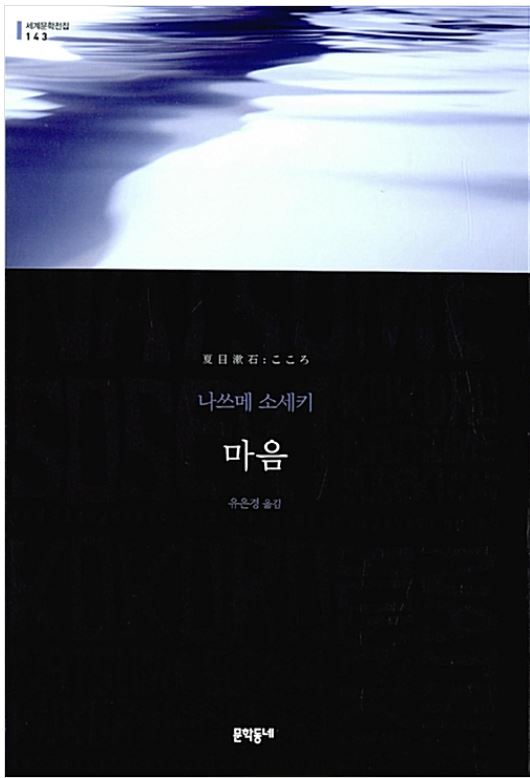
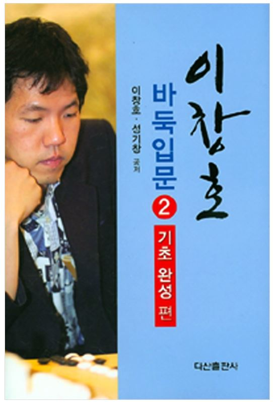
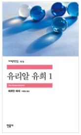
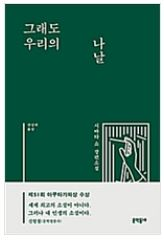
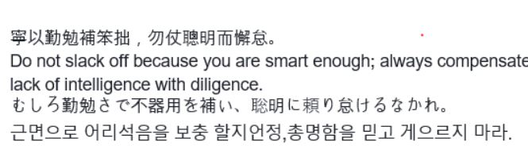

독서
넓어지기
공부
여행
독서
군생활 동안 내가 뭘 했을까? 를 되돌아 보게 되면 떠오르는 게 몇가지 있다.
그중에 정말 잘했다고 생각하는 일중에 하나가 바로 독서이다.
사르트르의 구토를 시작으로 선임과 친구들에게 추천받아 꾸역꾸역 읽기 시작한 책이 벌써 90권을 돌파했다.
독서는 이제 내 삶에서 빠질 수 없는 유희이다.
이번 말출 때 읽을 예정인, 읽은 책들을 소개 해 드리겠습니다.
1.마음, 나쓰메 쏘세키

한동안 사로잡혀 있던 모순이라는 모티브를 다룬 소설
2.이창호 바둑입문2 (기초완성 편), 이창호/성기창

소대장 바둑 쳐바르기 project
3.유리알 유희1,2 ,헤르만 헤세

헤세 읽기의 대장정의 마지막, 일부러 말출때 여유롭게 읽으려고 남겨 둠
4. 그래도 우리의 나날, 사바타 쇼

후임(792 저농민, 분대장 three 苦)이 추천한 책
